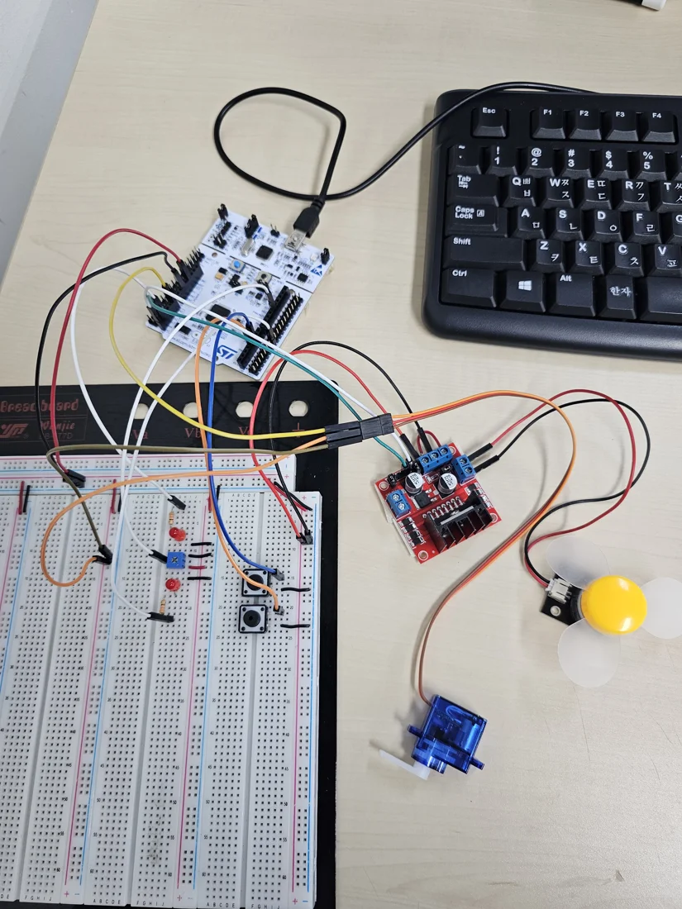
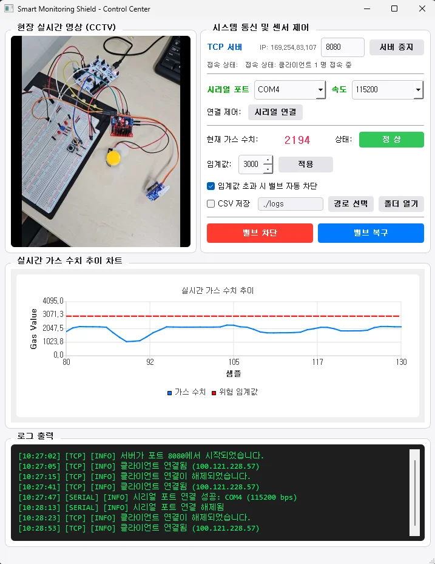

Smart Monitoring System
STM32 베어메탈 제어, Qt 중계, Android 원격 제어를 연결한 프로토타입입니다. 가스 입력은 가변저항으로 모사합니다.
01. 프로젝트와 본인 역할
개인 프로젝트로 STM32 레지스터 기반 펌웨어, Qt 관제 서버, Android 클라이언트와 통신 연동을 구현했습니다. 실제 가스 검지기가 아닌 가변저항 입력을 사용한 제어 프로토타입입니다.




02. 시스템 구조
저장소의 시스템 구조를 요약한 설명입니다. 각 블록은 데이터·제어 경로를 나타냅니다.
03. 핵심 설계 판단
MCU·중계·모바일의 역할 분리
STM32는 ADC와 액추에이터를 다루고, Qt는 UART/TCP 중계와 임계값 판단, Android는 영상 송신과 원격 명령을 담당합니다.
TCP의 메시지 경계를 명시
JPEG 앞에 4바이트 Big-Endian 길이를 붙이고 수신 버퍼에 프레임이 완성될 때까지 기다립니다. UART의 계측값은 개행으로 구분합니다.
같은 제어 상태의 반복 적용 억제
차단·복구 상태를 관리해 동일 명령으로 액추에이터를 반복 갱신하지 않도록 합니다. 현장 버튼과 원격 명령을 같은 상태 변경 경로에 연결합니다.
04. 문제 해결 사례
- 현상
서보의 지시 각도와 실제 동작이 맞지 않는 문제가 있었습니다.
- 원인 파악
APB1 버스 주파수와 TIM2 입력 클럭을 혼동해 PWM 분주 기준이 어긋난 경로를 확인했습니다.
- 수정
타이머 입력 96 MHz에 맞춰 PSC=95, ARR=19999로 설정해 1 μs tick과 20 ms 주기를 구성했습니다.
- 확인 결과
현재 timer.c 설정과 저장소 문제 해결 기록을 대조했습니다. 전체 차단·복구 시연이 공개되어 있으며 이번 작업에서 오실로스코프 재계측은 하지 않았습니다.
05. 검증 결과와 한계
공개 자료에서 확인한 결과
저장소 시연은 가변저항 입력에 따른 자동 차단, Android 원격 명령, 물리 스위치, Qt GUI 제어를 다룹니다. UART/TCP 규약과 펌웨어·앱 기술 문서가 공개되어 있습니다.
실제 가스 센서의 검출 정확도나 산업 안전 인증을 검증한 시스템은 아닙니다. 자동 차단 판단은 Qt에 있으며, 네트워크 단절 등 모든 장애 조건의 안전 동작을 보장하지 않습니다.
06. 관련 자료
사진·시연·기술 근거: 프로젝트 공개 저장소. 사진은 웹 열람을 위해 크기와 형식을 조정했습니다. 외부 영상은 링크에서 직접 재생할 수 있습니다.